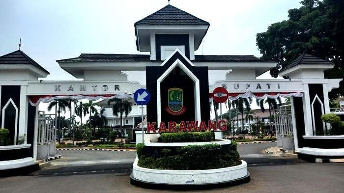
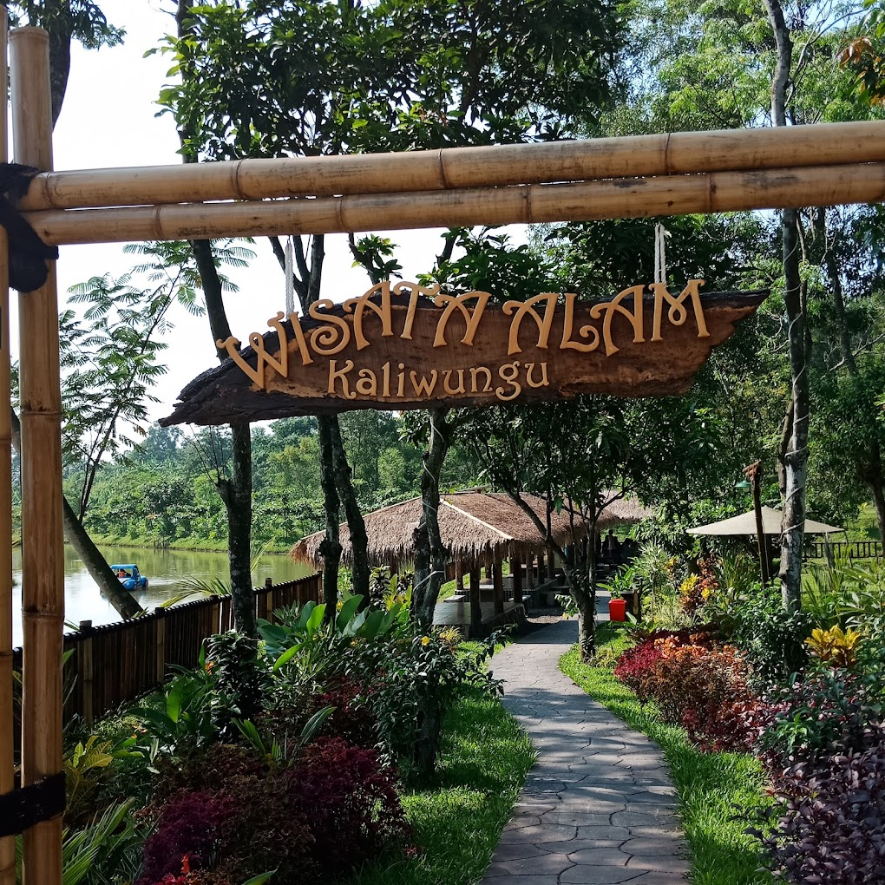
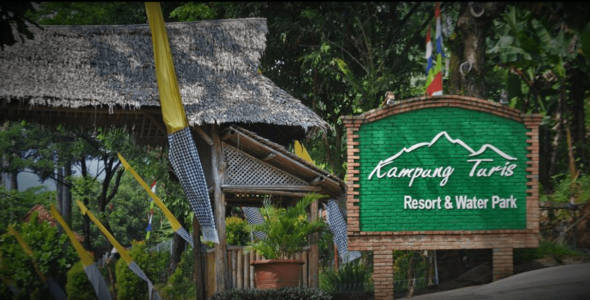
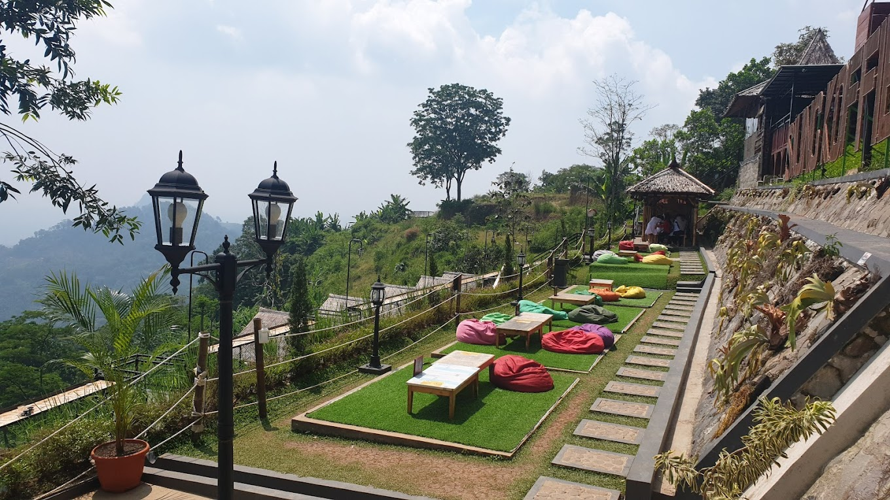
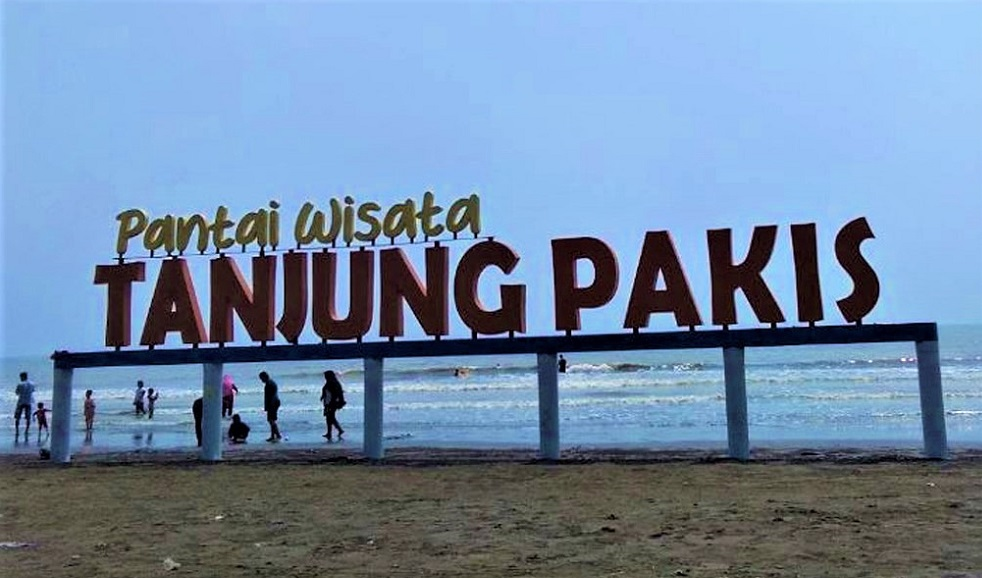

Sejarah

Karawang berasal dari Bahasa Sunda yaitu Ka-rawa-an, yang memiliki arti tempat atau daerah yang berawa-rawa.
Karawang menjadi daerah berpemerintahan sendiri dimulai semenjak Karawang diduduki oleh Kesultanan Mataram, di bawah pimpinan Wiraperbangsa dari Sumedang Larang tahun 1632.
Kesuksesannya menempatkannya sebagai wedana pertama dengan gelar Adipati Kertabumi III. Semenjak masa ini, sistem pertanian melalui pengairan irigasi mulai dikembangkan di Karawang dan perlahan-lahan daerah ini menjadi daerah pusat penghasil beras utama di Pulau Jawa hingga akhir abad ke-20.
Karawang, kata Nace, menjadi kabupaten dengan bupati pertama Raden Adipati Singaperbangsa bergelar Kertabumi IV yang dilantik 14 September 1633. Tanggal ini kemudian dinobatkan menjadi hari jadi Kabupaten Karawang.
Geografis
Secara geografis wilayah Kabupaten Karawang terletak antara 070-02-1070-40 B dan 50-56-60-34 LS, termasuk daerah dataran yang relative rendah, mempunyai variasi ketinggian wilayah antara 0 - 1.279 meter di atas permukaan laut dengan kemiringan wilayah 0 - 2 %, 2 - 15 %, 15 - 40 % dan diatas 40 %.
Wilayah Kabupaten Karawang sebagian besar dataran pantai yang luas, terhampar di bagian pantai Utara dan merupakan endapan batuan sedimen yang dibentuk oleh bahan-bahan lepas terutama endapan laut dan aluvium vulkanik. Sedangkan di bagian tengah kawasan perbukitan yang sebagian besar terbentuk oleh batuan sedimen, sedang di bagian Selatan yang merupakan wilayah limpahan dari Kawedanan Jonggol merupakan daerah perbukitan yang sejuk terdapat Gunung Sanggabuana dengan ketinggian ± 1.291 Mdpl. Wilayah selatan ini secara iklim dan kondisi geografis berbeda dengan sebagian besar wilayah Kabupaten Karawang yang didominasi oleh dataran rendah, datar dan beriklim panas, wilayah selatan secara geografis dan iklim, bahkan kultur lebih mirip dengan wilayah Jonggol, Bogor.
Wisata Karawang
Karawang memiliki berbagai macam tempat wisata yang menarik untuk dikunjungi diantaranya :
Wisata Alam Kaliwungu

Wisata alam Kaliwungu adalah tempat wisata sempurna yang dapat memberikan suasana tenang dengan lokasi yang tidak terlalu jauh dari keramaian kota.
Kaliwungu terletak di tengah-tengah alam yang hijau dengan pepohonan rindang yang menciptakan suasana yang sejuk dan menyejukkan. Ini adalah tempat yang sempurna untuk bersantai dan merasakan kedamaian alam.
Area sekitar Kaliwungu sangat cocok untuk piknik bersama keluarga atau teman-teman dengan membawa anak-anak mereka. Pengunjung dapat membawa bekal dan menikmati makanan di tengah alam yang hijau sambil menikmati panorama yang ada di area ini.
Destinasi ini hanya berjarak 5 kilometer dari pintu tol Karawang Barat. Rutenya adalah ketika pengunjung telah keluar dari pintu tol Karawang Barat, pengunjung dapat masuk mengambil jalan arah kiri menuju kawasan KIIC. Kemudian bisa mengikuti jalan di kawasan ini menuju PT Sharp, yang berlokasi di ujung barat KIIC. Setelah melewati area pabrik, pengunjung bisa masuk melalui jalan belakangnya, dan mengikuti arah petunjuk menuju destinasi wisata Kaliwungu.
Kampung Turis

Kampung Turis Karawang merupakan tempat wisata yang populer di daerah Karawang, Jawa Barat. Tempat wisata ini menghadirkan wahana hiburan bermain berkonsep natural tradisional. Beberapa wahana favoritnya ada wahana waterpark dan taman. Sehingga, berwisata di sini menghadirkan pengalaman baru yang unik.
Tak hanya pemandangannya yang asri, di tempat wisata ini tersedia beberapa wahana hiburan menarik seperti waterpark, cafe, play ground, aula outdoor tempat meeting, ruang indoor meeting, serta wahana air terjun.
Alamat lokasi Kampung Turis Karawang terletak di Kampung Parakan Badak, Desa Mekarbuana, Kecamatan Tegalwaru, Kabupaten Karawang, Jawa Barat. Lokasi ini berada di kaki Gunung Sanggabuana sehingga memiliki suhu udara yang relatif sejuk dan nyaman untuk bermain di wahana outdoor.
Puncak Sempur

Puncak Sempur terletak di Desa Cintalaksana, Kecamatan Tegalwaru, Kabupaten Karawang. Jaraknya sekitar 27 kilometer dari pusat Kota Pangkal Perjuangan. Orang-orang Karawang menyebut daerah ini dengan Loji. Untuk menuju bukit dengan tinggi 620 meter di atas permukaan laut (mdpl) ini, harus melewati jalan menanjak dan menurun sekitar 15 menit. Kendaraan harus benar-benar fit untuk mencapai Puncak Sempur. Perjalanan yang cukup menguras adrenalin ini bakal terbayar dengan pemandangan yang disuguhkan. Tiket masuk kawasan ini pun relatif murah Rp 10.000. Di Puncak Sempur, pengunjung dapat menghirup udara segar di pagi hari ditambah pemandangan indah yang berkabut. Memasuki sore hari ada senja yang menanti. Jika beruntung, akan menyaksikan elang terbang di atasmu. Sementara pada malam hari, gemerlap lampu-lampu dari perkampungan warga turut menyuguhi pandangan mata. Cocok bagi mereka yang ingin menjernihkan pikiran dari hiruk pikuk kota yang riuh. Pengunjung juga bisa camping di Puncak Sempur. Ada beberapa titik camping ground. Salah satunya di puncak 2. Sebab ada dua puncak di destinasi wisata ini. Jika tak membawa perlengkapan, pengunjung juga bisa menyewa tenda, hammock, hingga memesan kayu bakar kepada pengelola.
Destinasi ini berhasil masuk ke dalam nominasi destinasi wisata dataran tinggi terpopuler pada ajang ‘Anugerah Pesona Indonesia (API) Award’ tahun 2020.[3] Dari atas Puncak Sempur, wisatawan dapat melihat pemandangan daerah Karawang yang indah dan menikmati sejuknya udara di atas bukit. Pegunungan Sanggabuana yang membentang membatasi wilayah Karawang dengan Purwakarta dan Bogor menjadi objek pemandangan matahari terbenam dari atas Puncak Sempur.
eanekaragaman hayati di sekitar wisata ini masih tergolong cukup banyak. Salah satunya adalah menjadi jalur migrasi burung langka dari Jepang. Sehingga tak aneh jika banyak lembaga konservasi yang melakukan penelitian di sekitar Puncak Sempur.
Pantai Tanjung Pakis

Pantai Tanjung Pakis adalah sebuah pantai yang berada di Kabupaten Karawang, Jawa Barat, tepatnya ada di Desa Tanjung Pakis. Letak pantai ini bisa dibilang sangat jauh dari pusat kota, berjarak sekitar 70 km dari pusat Kabupaten Karawang.
Sama seperti pantai Utara Jawa pada umumnya, pantai Tanjung Pakis memiliki ombak yang kecil dengan pasir berwarna cokelat kehitaman. Namun di beberapa area bibir pantainya pasir bercampur dengan kulit kerang.
Untuk berwisata ke Pantai Tanjung Pakis, pengunjung akan dimintai biaya tiket masuk saat memasuki area wisata, meski begitu harga tiket masuknya cukup terjangkau.
Selain bisa menikmati pemandangan pantai dari bibir pantai, pengunjung juga bisa menyewa perahu untuk menikmati panorama pantai dari tengah laut. Bagi yang ingin mencicipi kuliner lokal, berbagai jenis ikan bakar tersedia di pinggir pantai. Banyak warung makan yang berjejer di sekitar pesisir pantainya.